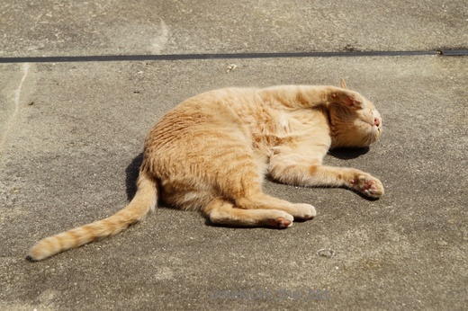
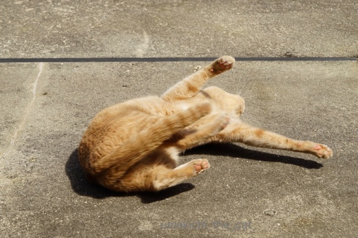
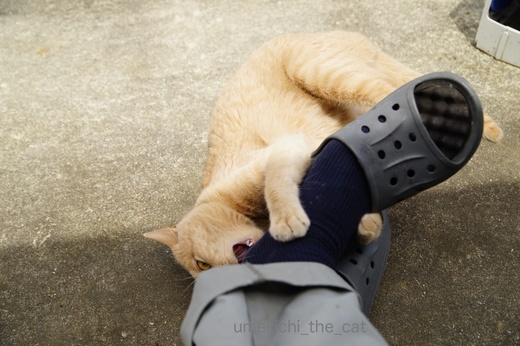
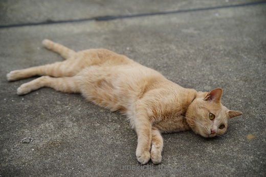
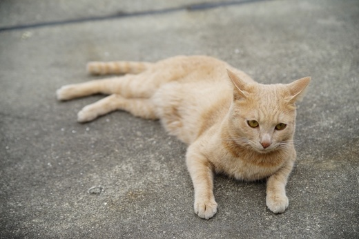
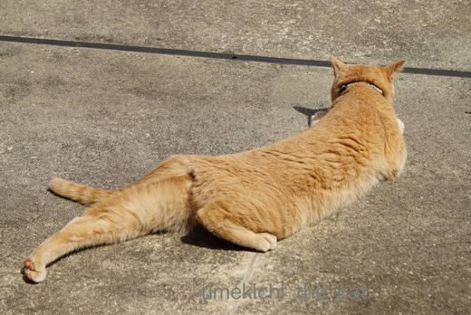
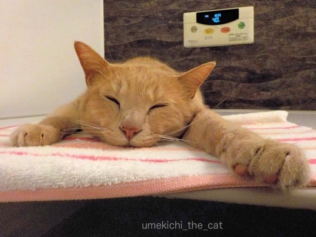
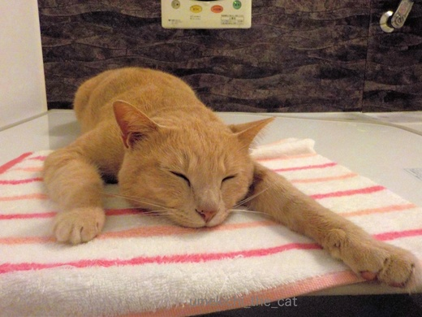
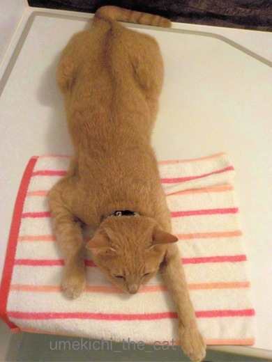

アイドルとカメラおじさん [梅吉]
厳重な監視のもと梅吉さんのベランダ活動。
暑いくらいの良い天気の日だったので日光浴も気持ち良さそうです。

ごきげんでくりんくるん。
（ああ、シャンプーしたばかりなのに・・・涙）


ハイになっておとーさんの足にがぶ〜けりけり。

ひと暴れしてコロンとねそべる梅吉さん。
その様子を「いいね〜」「かわいいねぇ〜」「きもちいいねぇ〜〜」と
ニヤニヤしながら写真を撮るおとーさん。
その様子は浜辺にねそべるアイドルと撮影するあやしいおじさん・・・


先日シャンプーした日の夜。
昼間洗われた不満もあって今夜はお風呂には来ないだろうと思っていたら・・・きた(⌒-⌒; )

しかもいつもより寛いでるんでないかいww

手をびろ〜ん

全身びろ〜ん。
梅吉、イヤなことはすぐ忘れる子＾＾

カフェオレ色の梅吉

梅吉 2023年8月10日 永眠


梅吉と出会った譲渡会

犬猫の理由なき殺処分ゼロ
妄想広告
UMEKICHI 光

爆発的に早い！
時々攻撃的！
Thanks to Mr.Boss365
爆発的に早い！
時々攻撃的！
Thanks to Mr.Boss365

梅吉くんスレンダーだからね～、どれもいいポーズ！
私も褒めながら写真とってますよｗ
次のシャワーシーンも楽しみにしています(*´艸`)
by muku (2017-05-10 15:51)
梅吉くん、可愛いですねえ～！
スレンダーだから、伸びポーズが決まる♪
褒めながら写真撮りますよね～しまいにあやしいぐらいに？＾＾；
お風呂、いやがってても、実はその後には一段と気持ちいいのでは＾＾
by sana (2017-05-10 16:17)
サービスポーズのあんよびろ~んも
お風呂の上でおててびろ~んも
どっちもかあいいっ!!
by zombiekong (2017-05-10 16:46)
mukuさん＞あら(´◡`๑) 梅吉のシャワーシーン待ち？
マニアですね〜マニアですね〜〜Ｏ(≧▽≦)Ｏ
sanaさん＞スレンダーですか！ありがとうございます。
そのうえ梅吉長いんです＾＾
一度測って見たいのですがメジャーを出すと目の色が変わって
すごい勢いでじゃれてくるので測れないの^^;
zombiekongさん＞あんよびろ〜ん可愛いでしょう(≧▽≦)
顔が写っていなくても十分可愛い罪なおとこです！
お風呂に入るとなぜか手をびろ〜んと伸ばします。
梅吉の一番リラックスしたポーズなのかもしれません＾＾
by ちぃ (2017-05-10 17:26)
気持ち良さそうにベランダを満喫してますね(#^.^#)
お風呂でリラックス♪
可愛いですねぇ～
ぬくぬくで気持ちいいのですね！
by きぃ (2017-05-10 17:29)
ホンマにシャンプーしたばかりでっせ〜
苦労しはったのに（笑）
『その様子は浜辺にねそべるアイドルと撮影するあやしいおじさん』とは、
良い例え方です（笑）分かりやすいねぇ。
by kiki (2017-05-10 20:40)
お風呂フタ梅吉さん、めちゃ気持ち良さそう♪ ^^)
by yes_hama (2017-05-10 21:47)
「猫は20分たったら嫌なことは忘れる」と猫本に書いてあるのを読んだことあります^^;
シャンプーはシャンプー、ぬくぬくお風呂場のフタの上とは別物なのでしょう！
ビロ～ンの気持ちよさそうなこと♪
お手手引っ張って鼻ちゅーしたくなっちゃいます(*^-^*)
by ゆきち (2017-05-10 21:48)
シャンプーしてさらにイケメンになったのにゴロゴロスリスリは勘弁して！って思いますね。
by みぃにゃん (2017-05-10 22:43)
あやしいおじさん(お兄さん)…秋葉原でも見ますよ〜。
頭にバンダナ巻いてリュック背負って首からカメラさげて…(^^;
うちの王子、お風呂はあんまり好きじゃないけれど、
その間、自分が絶対的中心で、あれこれ世話を焼いて貰えるので
まんざらでもないと思っている節があります〜。
梅さまもそうかも！(^^)
by も〜 (2017-05-10 23:28)
さすがアイドル、いろんな悩殺ポーズで釘付けですね( ^ω^ )
梅吉くん、シャンプー後もお風呂でお寛ぎですねぇ=(^.^)=
うちの大御所も梅吉くんと一緒でシャンプーした夜もかみさんに
「一緒に入る〜」と甘えてます(⌒-⌒; )
もしかして茶トラって・・・w
by ニッキー (2017-05-11 00:04)
さっすがアイドルですねぇヾ(*´∀｀*)ﾉ
可愛いですー!!
by sumi-cyan (2017-05-11 01:48)
＞浜辺にねそべるアイドルと撮影するあやしいおじさん
やーん(笑)
梅吉君を擬人化して想像しちゃったよー。
猫で良かったｗｗ
お風呂場でびろーん姿、これは堪らないですわｗ
シャンプーしても、うみもあおも夜には風呂場で寛ぎます。
同じだね^^
by リュカ (2017-05-11 09:36)
きぃさん＞お風呂のフタ上は相当気持ち良いのか
私がお風呂から上がってもそのまま一人で寝ていることがありますよ＾＾
ただ、お風呂上がりに（なぜか）おやつをもらえることになっていて
それを思い出すと慌てて走って出てきますけどね〜（＾◇＾）
kikiさん＞『その様子は浜辺にねそべるアイドルと撮影するあやしいおじさん』
としか形容できない怪しい眺めだったのですよ〜(｣ﾟﾛﾟ)｣
対象が梅吉でよかった・・・^^;
yes_hamaさん＞ほんっとうに気持ち良さそうに伸びてるんですよ〜。
カメラを構えるおじさん・・・じゃあないですが
見ていると思わず「気持ち良いですかー」「いいですねー」
「のびのびですねー」って言ってます、私^^;
ゆきちさん＞20分たったら忘れる、シャンプーと温く気持ち良いのは別・・
ねこってポジティブシンギングなんですね〜！
私もこのようにありたいものです(^_-)-☆
みぃにゃんさん＞ベランダに出した瞬間「あ！！」って思いましたけど
すでに遅し・・・・潔くあきらめましたよ＾＾
も〜さん＞あ〜、秋葉原は聖地ですから^^;
日頃から下僕には十分かしづかれているのに更に密な奉仕を要求！！
う〜ん、さすが猫様。
でもその求めに嬉々として応じるわたしたち下僕、ですよね（＾◇＾）
ニッキーさん＞梅吉、自分の立ち位置を十分把握してのポーズの数々でした＾＾
・・・・そうすると、大御所様は
シャンプー中黙って怒る、シャンプー後ニッキーさんで暴れる
その後ゴッドマザー様に甘える、の流れなんですね！
なんてフリーダム！！
茶トラ男子はとくに・・・・かもしれませんww
sumi-cyanさん＞はい〜＾＾我が家のアイドルですから〜（＾◇＾）
リュカさん＞ふふふ、人だとアブナイよね〜。
梅吉がモデルでも見ていてちょっと気持ちがざわついたわww
あおうみ２にゃんさんも20分で忘れるポジティブシンキングね(^_-)-☆
by ちぃ (2017-05-11 17:18)
嫌なことはすぐ忘れる←楽しく生きるためには大事なことですね(*^_^*)
by palpal (2017-05-11 17:59)
猫が可愛い事をするとおうち撮影会、あるあるですよね。
みんな一斉にケータイやらなんやらを自分ちの猫に向ける…可愛いから仕方ないにゃฅˆ•ﻌ•ˆฅ♬
by BillK-ko (2017-05-13 11:14)
ほおお、なにやら色っぽいサ〜ビスポーズ♡
それにしても、お風呂入れられたばっかりなのに、
のこのこやってきて、このくつろぎっぷり？
むむむ・・・意外と、梅吉さん、お風呂シャンプーにハマった、とか?!(^_-)
by のらん (2017-05-13 12:18)
palpalさん＞そうそう、人間もそうありたいものです(ΦωΦ)
BillK-koさん＞そう！大撮影大会！！そして膨大な写真のライブラリーになっていきます^^;
我が家のライブラリー95%梅吉だし・・・・(〃▽〃)
のらんさん＞トリ頭ならぬ梅吉頭？(ﾉ≧▽≦)ﾉ
「わしきょうしゃんぷーされてたいへんやったんやで・・・」と
言っていたとかいないとか。
切り替えが早いのでしょう（そういう事にしておいてくださいませ(^_－)☆）
by ちぃ (2017-05-13 15:04)
全身で解放感！気持ちいーいね！♡
by Ginger (2017-05-15 12:57)